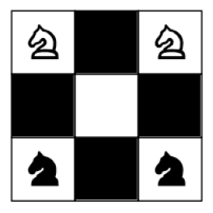

ATLARIN DANSI
Çok eski bir problemdir bu; Avrupa’da 1512’de bulunmuştur.

Üstteki satranç tahtasında siyah atların yerine beyaz atları getirmek için en az kaç hamle yapmak gerekir?
Cevap:
16 hamle gerekir. 4 grup hareket yapılır:
Atlar köşelerden orta karelere gelir.
Atlar orta karelerden köşelere gider.
Atlar yine köşelerden orta karelere gelir.
Atlar yine orta karelerden köşelere gider.